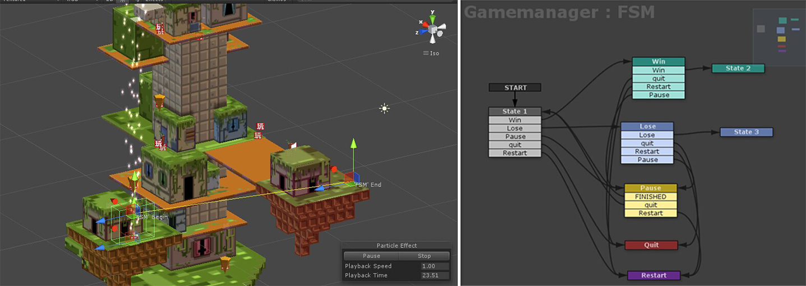
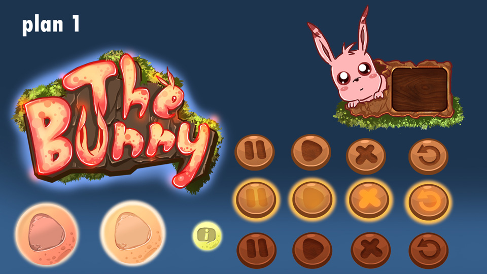
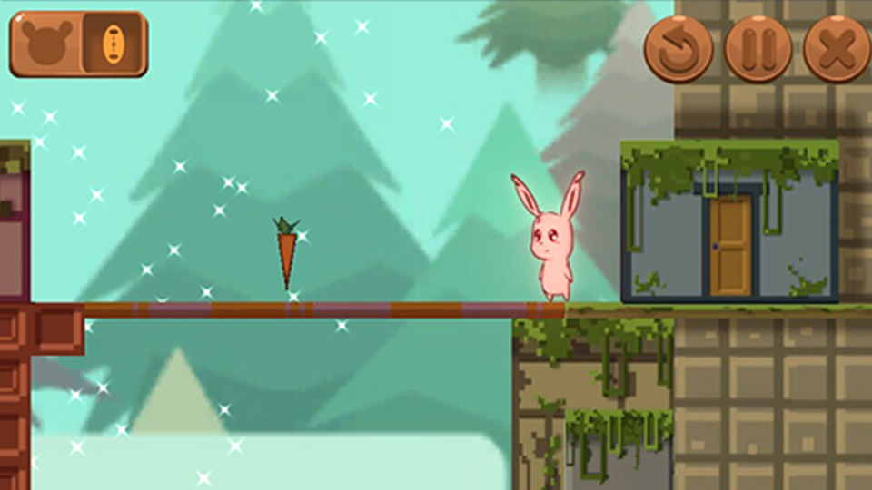
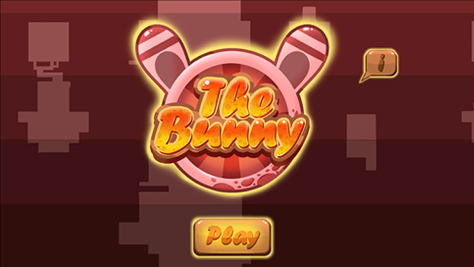

About The Bunny
The bunny is an adventure game that a bunny is hunting for treasures from the strange building. The game was created by using Unity 3D. The characters are 2D-based and were crafted in Photoshop. All character animations were designed by using Spine. To add the depth to scenes, multiple layers were employed, each featuring distinct special effects. Additionally, all elements on the map were generated in Photoshop. Separate lighting and particle systems were implemented to enhance the final rendering.
The model was built by Maya. The textures were created easily as the UV map was created properly.



Code-free Programming
I adopted the plugin for Unity 3D called Playmaker.The entire mechanism was created without writing a line of code.
The principle of the UI was to blend into the game scene instead of being highlighted.


This game was the first game that I covered the end-to-end process from concept, art, coding and compile. And this was selected as one of the best thesis projects.

